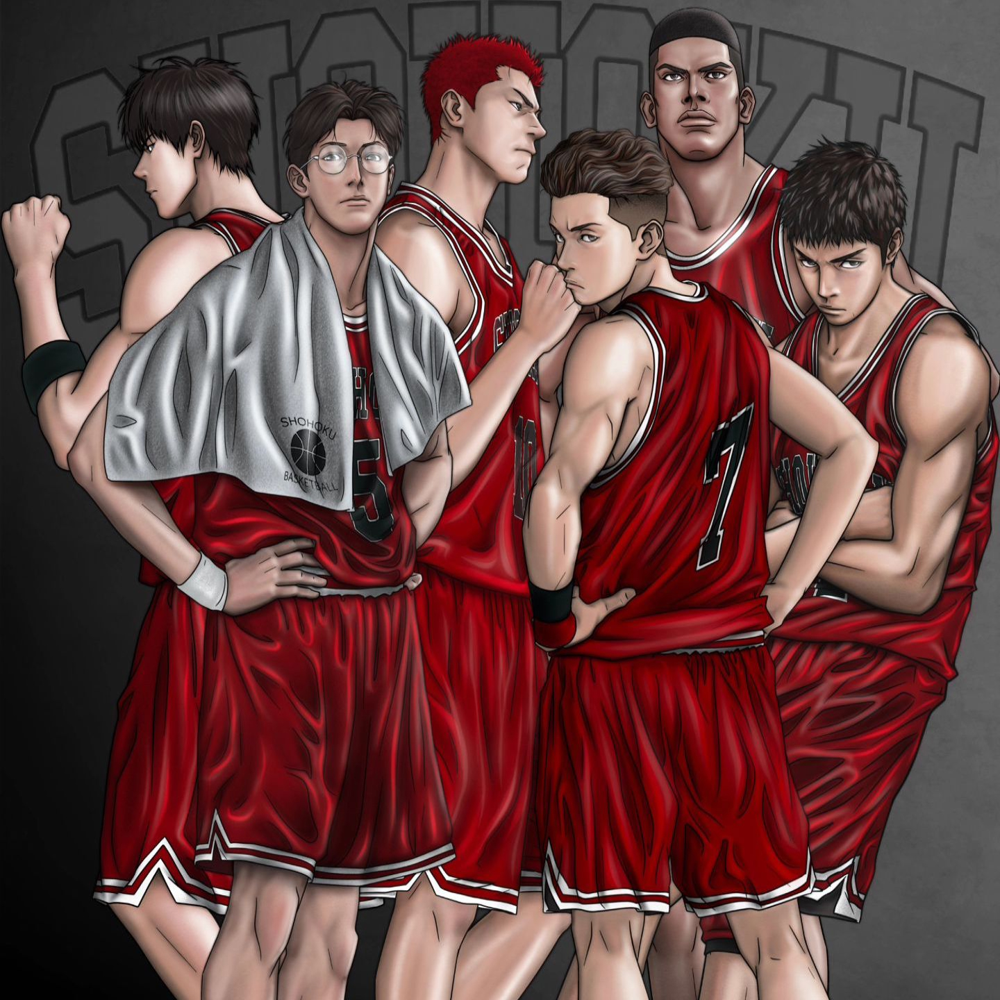

Equipo aguerrido con enfoque en la defensa.
En su primer participación en las Nacionales vencieron al equipo tricampeón de Japón, Sannoh. Por lesiones y cansancio quedaron eliminados en la tercer ronda quedando dentro de los 16 mejores equipos de Japón.
